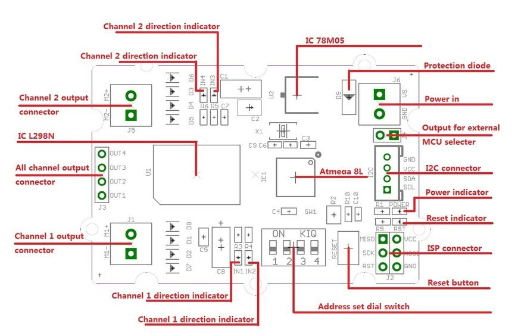
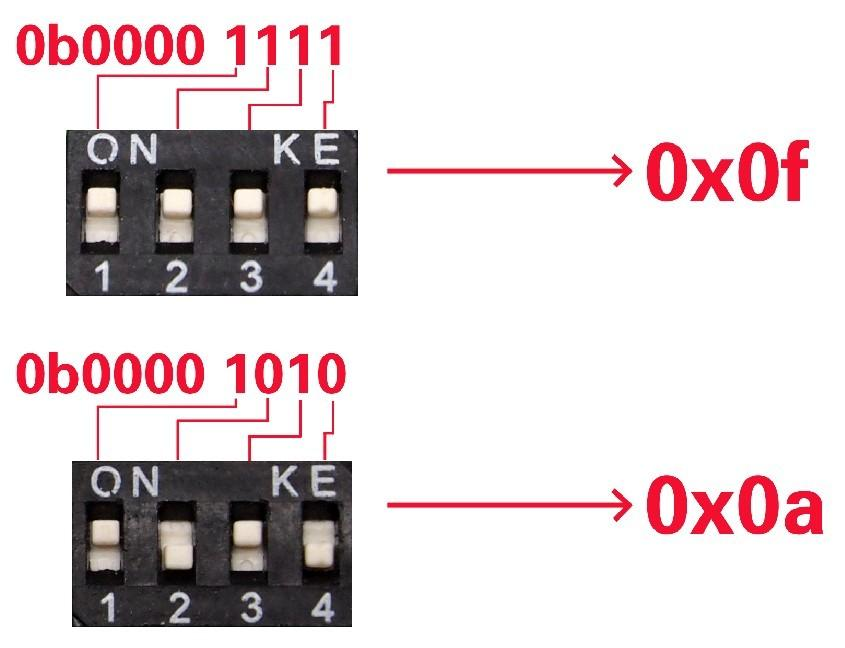

The Grove - I2C Motor Driver V1.3 (latest version) can directly control Stepper Motor or DC Motor. Its heart is a dual channel H-bridge driver chip（L298N）that can handle current up to 2A per channel, controlled by an Atmel ATmega8L which handles the I2C communication with for example an Arduino. Both motors can be driven simultaneously while set to a different speed and direction. It can power two brushed DC motors or one 4-wire two-phase stepper motor. It requires a 6V to 15V power supply to power the motor and has an onboard 5V voltage regulator which can power the I2C bus and the Arduino(selectable by jumper). All driver lines are protected by diodes from back-EMF.
Contrast to the Grove - I2C motor driver V1.2, the V1.3 enables users to control the stepper more easily. You do not need to control the steppers all the time anymore, simply send a command to I2C motor driver V1.3 to drive a stepper, and it will act as your command, which would save your Arduino resource and simplify your code.
Model: ROB72212P

| Item | Min | Typical | Max | Unit |
|---|---|---|---|---|
| Working Voltage | 6 | - | 15 | VDC |
| Max Output Current per channel | 0.5 | A | ||
| Maximum Total current | 1.0 | A | ||
| Input/output voltage on I2C bus | 5 | V | ||
| Communication protocol | I2C | / | ||

78M05 IC: 5v voltage regulator
L298 IC: dual full bridge driver
Atmega8 IC: Control Motor Rotate.
NOTE: Input voltage on screw terminals is regulated to 5v and connected to I2C +5v via a jumper (J4). Remove jumper if both external power via the screw terminals and power via the I2C header are used. Use jumper if 5v should be supplied to the I2C bus.
The I2C Motor Driver can control motor which is based on the chip L298. The L298 isn’t just a dual motor driver, it is a dual H-bridge. An h-bridge is basically a specific setup of transistors that allow you to switch direction of current. Hooking up to a motor means you can have it spin in both directions; and with PWM input, you can use your Arduino to make them spin at any speed. Because the L298 has 2 H-bridges, you can make a robot turn around by spinning each wheel in different directions, and of course go forwards and backwards.
Now, let's use the I2C Motor Driver to control two DC motors or a stepper rotating clockwise and anticlockwise.

#define I2CMotorDriverAdd 0x0f // Set the address of the I2CMotorDriver

Note:
And then program your Arduino as below:
#include <Wire.h> ....... ....... < Driver functions > ....... ....... void setup() { Wire.begin(); // join i2c bus (address optional for master) delayMicroseconds(10000); //wait for motor driver to initialization } void loop() { while(1) { MotorSpeedSetAB(100,20); delay(10); //this delay needed MotorDirectionSet(0b1010); //0b1010 Rotating in the positive direction delay(1000); MotorDirectionSet(0b0101); //0b0101 Rotating in the opposite direction delay(500); } }
In this program, Arduino first set the speed of the 2 DC motors with the MotorSpeedSetAB()command, and then set the DC motors work directions with MotorDirectionSet() command. please refer to the Function Reference for details, you can download all the demo code in the Resource.
As the upgraded version of I2C motor DriverV1.2, You can drive stepper via 2 methods for I2C motor driver V1.3.
1. Control the stepper directly by Arduino
The I2C motor Driver can also be used to drive a 4-wire stepper. Connect your stepper to the output pins of I2C motor driver, and then connect motor driver to your Arduino/Seeeduino with I2C bus. Program your Arduino as below:
#include <Wire.h> ....... ....... < Driver functions > ....... ....... void setup() { Wire.begin(); // join i2c bus (address optional for master) delayMicroseconds(10000); //wait for motor driver to initialization } void loop() { while(1) { MotorSpeedSetAB(100,100);//when driving a stepper, the speed should be set to 100; delay(10); MotorDirectionSet(0b0001); delay(4); MotorDirectionSet(0b0011); delay(4); MotorDirectionSet(0b0010); delay(4); MotorDirectionSet(0b0110); delay(4); MotorDirectionSet(0b0100); delay(4); MotorDirectionSet(0b1100); delay(4); MotorDirectionSet(0b1000); delay(4); MotorDirectionSet(0b1001); delay(4); } }
This connected 4-wire stepper will rotate; you can adjust the rotation speed or step number in your Arduino program. You can also use some other stepper libraries to control it. For all the demo code please refer to Resource.

2.Control the Stepper using the I2C motor Driver V1.3 on-chip Atmega8L.
Take 24BYJ48 as an example, The hardware installation as show below:
Note:
The connection between 24BYJ48 Stepper Motor and I2C Motor Driver is shown as blow:
Download the Grove-I2C motor driver V1.3 demo code, and open the StepperControlMode2.ino:
#include <Wire.h> #define MotorSpeedSet 0x82 #define PWMFrequenceSet 0x84 #define DirectionSet 0xaa #define MotorSetA 0xa1 #define MotorSetB 0xa5 #define Nothing 0x01 #define EnableStepper 0x1a #define UnenableStepper 0x1b #define Stepernu 0x1c #define I2CMotorDriverAdd 0x0f // Set the address of the I2CMotorDriver // set the steps you want, if 255, the stepper will rotate continuously; void SteperStepset(unsigned char stepnu) { Wire.beginTransmission(I2CMotorDriverAdd); // transmit to device I2CMotorDriverAdd Wire.write(Stepernu); // Send the stepernu command Wire.write(stepnu); // send the steps Wire.write(Nothing); // send nothing Wire.endTransmission(); // stop transmitting } ....... ....... ....... ....... void stepperrun() { Serial.println("sent command to + direction, very fast"); SteperStepset(255); StepperMotorEnable(1, 1);// ennable the i2c motor driver a stepper. delay(5000); Serial.println("sent command to - direction, slow"); SteperStepset(255); StepperMotorEnable(0, 20); delay(5000); Serial.println("sent command to - direction, fast"); StepperMotorEnable(0, 2);// ennable the i2c motor driver a stepper. delay(5000); Serial.println("sent command to + direction,100 steps, fast"); SteperStepset(100); StepperMotorEnable(1,5); delay(3000); Serial.println("sent command to shut down the stepper"); StepperMotorUnenable(); delay(1000); Serial.println("sent command to - direction, slow, and 10 steps then stop"); SteperStepset(10); StepperMotorEnable(0,40); delay(5000); Serial.println("sent command to shut down the stepper"); StepperMotorUnenable(); delay(5000); } void setup() { Wire.begin(); // join i2c bus (address optional for master) delayMicroseconds(10000); Serial.begin(9600); Serial.println("setup begin"); stepperrun(); } void loop() { }
In this demo code, Arduino sends stepper-control command to I2C motor driver via I2C bus, with SteperStepset() to set the step number, and StepperMotorEnable() to set the direction and speed. Please refer to the Function Refrence for the details.
Note that if you have I2C motor driver V1.2 and want to use the off-line Stepper control methods, you will need to upgrade your firmware in your V1.2 motor driver with a AVRISP and upload the .hex file to your I2C motor driver. Please download the .hex file and source code and related tips in the [http://www.seeedstudio.com/wiki/Grove_-_I2C_Motor_Driver_V1.3#Resources Resource
1. void SteperStepset(unsigned char stepnu)
Description: Set the steps you want.
stepnu: the Parameter can be 1~255. if 255, the stepper will rotate continuously;
Usage:
Serial.println("sent command to + direction,100 steps, fast");
SteperStepset(100);
2. void StepperMotorEnable(unsigned char Direction, unsigned char motorspeed)
Description: Enable the IIC motor driver to drive a 4-wire stepper.
Direction: Stepper direction 1/0
motorspeed: defines the time interval the i2C motor driver, Change it output to drive the stepper. The actual interval time is : motorspeed * 4ms. That is , When motor speed is 10, the interval time would be 40 ms.
Usage:
StepperMotorEnable(1, 1);// enable the i2c motor driver a stepper.
3. void StepperMotorUnenable()
Description: Uneanble IIC motor drive to drive the stepper.
Usage:
StepperMotorUnenable();
4. void MotorSpeedSetAB(unsigned char MotorSpeedA , unsigned char MotorSpeedB)
Description: defines the speed of motor 1 and motor 2
Usage:
Serial.println("sent DC speed 100");
MotorSpeedSetAB(100,100);//defines the speed of motor 1 and motor 2;
delay(10); //this delay needed
5. void MotorPWMFrequenceSet(unsigned char Frequence)
Description:set the prescale frequency of PWM, 0x03 default
Frequence: the prescale frequency of PWM
6. void MotorDirectionSet(unsigned char Direction)
Description: Adjust the direction of the motors
Direction:can be Forward/Reverse rotating.
Usage:
MotorDirectionSet(0b1010); //"0b1010" defines the output polarity, "10" means the M+ is "positive" while the M- is "negative"
// make sure M+ and M- is different polarity when driving DC motors.
delay(1000);
MotorDirectionSet(0b0101); //0b0101 Rotating in the opposite direction
delay(500);
7. void MotorDriectionAndSpeedSet(unsigned char Direction,unsigned char MotorSpeedA,unsigned char MotorSpeedB)
Description: Adjust the direction and speed altogether.
| Revision | Descriptions | Release |
|---|---|---|
| v1.0 | Initial public release | May 17th, 2012 |
| v1.2 | modify the I2C address set by hardware | July 2nd, 2012 |
| v1.3 | modify the firmware to support off-line Stepper | Feb 18th, 2013 |
If you have questions or other better design ideas, you can go to our forum or wish to discuss.
Copyright (c) 2008-2016 Seeed Development Limited (www.seeedstudio.com / www.seeed.cc)